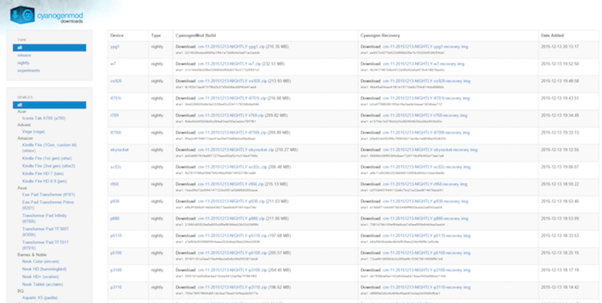

如何更新Android作業系統? How to update your Android?

認識cyanogenmod
cyanogenmod(簡稱CM)是一個Android第三方系統，如果手機型號比較老舊，手機商已經停止開發新版的Android，可以透過CM來幫忙更新!
(注意，使用CM不在手機保固範圍之內，最好過保再用)

首先進入CM的下載網頁。
不同的版本代表不同的Android版本(CM111=Android4.4，CM10=Android4.3..等)
下載好與手機型號相對應的CM後，丟進手機記憶卡裡面。
接著到這裡選擇要下載的版本GOOGLE play app(因為CM裡面預設沒有google play的app)，也丟進手機裡面。
接下來要進入fastboot模式。
1. 把手機完全關機，USB 線一端插著電腦，手機按住音量鍵+後，再把 USB 線另一端插在手機上，直到亮藍燈後再把音量鍵放開，就會進入 fastboot 模式。
2. 接著拔掉傳輸線，讓手機開機。等到 LED 燈亮起的時候就一直重複按音量+鍵，直到 LED 燈變色為止，接著應該會進到 CWM Recovery。
3. 在主選單選擇 install zip → choose zip from /storage/sdcard0 (或 sdcard1)，並選擇剛剛下載的 cm-xx-xxxxxxxx-xxxxxxx-xxxxxx.zip 檔案，然後選 Yes – Install xxxx。
4. 如果沒有問題的話，接著再選擇 install zip → choose zip from /storage/sdcard0 (或 sdcard1)，並選擇剛剛第二個下載的 gapps-xx-xxxxxxxx-signed.zip 檔案，然後選 Yes -Install xxxx。
5. 再回到主選單，選擇 reboot system now，至此你就成功刷入 CM 系統了！
第一次開機通常會很久，這都是正常的。
CM系統非常乾淨，通常下載完會發現比原廠有更多的記憶體空間，就算是用了好幾年的手機也會馬上又像剛拿到一樣快。